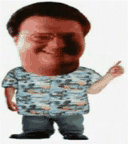

Access denied. You didn't say the magic word.
MS-DOS Prompt
Auto
A
Ready...
> access main security grid
access: PERMISSION DENIED....and...
YOU DIDN'T SAY THE MAGIC WORD!
YOU DIDN'T SAY THE MAGIC WORD!
YOU DIDN'T SAY THE MAGIC WORD!
YOU DIDN'T SAY THE MAGIC WORD!
YOU DIDN'T SAY THE MAGIC WORD!
